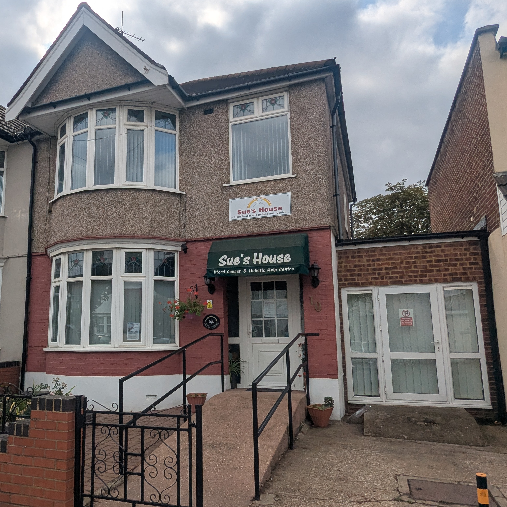
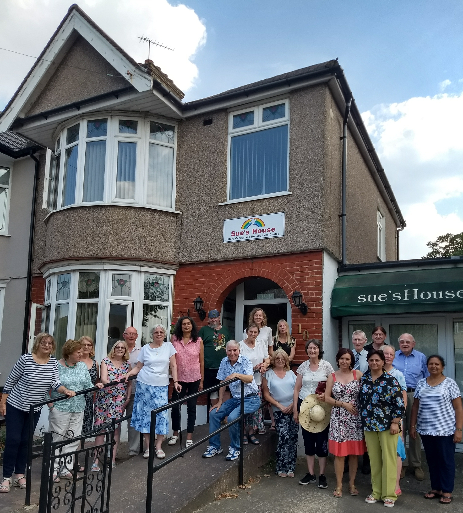

Ilford Cancer and Holistic Help
Welcome to Sue's House
A welcoming place for people affected by cancer, and for the families and friends who support them.

Our purpose
Support alongside complimentary care
Since 1984, Sue’s House, also known as Ilford Cancer and Holistic Help, has provided a welcoming and supportive space for people affected by cancer – including people undergoing treatment, those who have completed treatment, and their families and friends.
We believe that people can benefit from practical, emotional and mutual support alongside their medical care. Our aim is to help those affected by cancer feel supported, informed and more confident in managing their own health and wellbeing.
Everything we provide is complimentary to the treatment and care given by your own doctors and hospitals. We do not replace medical treatment, but work alongside it to support the wider wellbeing of the individual.
With the support from experienced staff, we offer a range of complimentary services, including counselling, healing, relaxation, dietary support and other complimentary therapies.
Sue’s House supports people across Ilford, Barking and Dagenham and the surrounding areas. Our services are provided free of charge, thanks to the generosity of our supporters, whose donations and fundraising make our work possible.
Our aim is simple: to help people affected by cancer feel less alone, better supported and more able to take an active role in their health and wellbeing.
Our story
Who was Sue?
Sue Quirk was a poet and an artist, but above all, she was a beautiful person – very much beloved by all who knew her, especially her children, Lucy and Rebecca, and her husband, Terry. When she died, she became the inspiration for the PEACE Support Group in Ilford, where she had lived. The PEACE Support Group was based on a loving and infinitely supportive concern for others, and it is this, above anything else, which helps people to heal.
How did that love and concern express itself in Ilford? Well, the place was Terry's front room in Meath Road; every Wednesday evening it felt like a cavern of light, filled with people gathered around the fire. On visiting Terry and Erica, his new partner, on other occasions, it was amazing to see the real size of the room and the ordinariness of the fireplace. But then one has to ask which perception was the more real. For love has the power to transform perception, not only of a room and its furniture, but of cancer and of the one suffering from cancer. And this is what was going on in that expanded room; cancer was perceived as an opportunity and the sufferer as a human being of infinite value, no longer the helpless victim of a vile scourge.

Now we have moved on and no longer meet at Terry's. Cavernous as the room may have seemed, it was in fact bursting at the seams, and anyway, it was only available once a week. The vision was born of a home-from-home for the group – somewhere the members could call their own, with an ever-open door.
So a charitable trust was founded, called the North East London Cancer Support Group, with Terry as Chairman and Frank Longcroft as Trustee and Group Administrator, and a sum of over £30,000 was raised. Then Frank carried out some research which produced a shortlist of three houses for Terry and acting counsellor Katherina to inspect.
So it was that 10 Dawlish Drive, Ilford, became Sue's House. The dream had come true. It was opened on Wednesday evening, 23 August 1984.